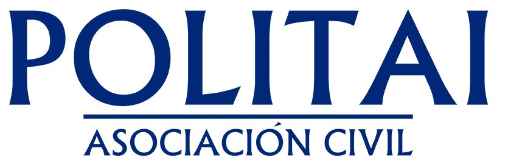

Introducción a R y RStudio
Joel Belsasar & Carlos Crespín
a20196510@pucp.edu.pe | cdcrespin@pucp.edu.pe

Instrucciones
- Diapositivas: https://taller-politai-2024-0.github.io/Sesion-0.1/
- Sesión 1 en GitHub Pages: https://taller-politai-2024-0.github.io/Sesion-0.1/
Preparativos para el taller
Para seguir el taller, asegúrese de…
- Contar con la última versión de RStudio v2022.07 o posterior:
- Contar con una cuenta de rstudio.cloud y acceder a los archivos de la sesión 1
Sobre R y RStudio
¿Qué buscamos con el taller?
Familiarizarnos con el lenguaje, el uso de R y explorar los formas más comunes y útiles para el análisis de datos.
No es un curso exhaustivo que cubra todas las aplicaciones y posibilidades que se pueden aprovechar con R.
Ejemplos de informes…
Repasemos la instalación de…
Íconos de R y Rstudio, respectivamente
Otra opción es RStudio Cloud
Esta plataforma se define como un Cloud computing. Es decir, el hardware, software, datos y recursos que utilizas para tus cursos de estadística pasan de estar en nuestras computadoras a “la nube”.
Pueden crearse una cuenta en el siguiente enlace de Posit Cloud: Log in or Sign Up
- Para profundizar revisen el siguiente enlace: Rstudio Cloud: Primeros Pasos
¿Qué es R®?
R® es un…
lenguaje y entorno
cientifico y técnico
de código abierto
para computación estadística, gráficos, entre otros.
… ¿Y RStudio?
- Rstudio es un integrated development environment - IDE: un interfaz amigable y poderoso para trabajar con R.
- Puedes descargarlo e instalarlo desde https://posit.co/download/rstudio-desktop/.
RStudio se actualiza periódicamente. Cuando haya una nueva versión, RStudio te lo notificará. Es recomendable actualizarse para obtener las últimas características.
Pero si hay más softwares estadísticos, ¿por qué usamos (o deberíamos usar) R?
¿Para qué podemos usar R?
Proporciona una amplia variedad de herramientas para generar visualizaciones y personalización de gráficos de datos de alta calidad, además, junto con Rstudio permiten la automotización de reportes y la replicabilidad de los análisis mediante el uso de scripts.
- Actualmente, R es ampliamente utilizado en áreas como la bioestadística, el data mining, la econometría, la visualización de datos, etc.
- R se emplea principalmente para análisis estadístico de datos y construcción de gráficos, pero su potencia radica en su calidad como lenguaje.
Con R se pueden realizar una variedad de tareas adicionales, como…
- Analizar y/o editar imágenes.
- Realizar análisis de sonido.
- Analizar textos (cuantitativa y cualitativamente).
- Generar mapas y realizar análisis espacial.
- Realizar análisis de redes sociales (ARS).
- Extraer, analizar y visualizar datos de páginas web (como Facebook, Twitter, Instagram, etc).
- Escribir textos (artículos, libros, etc.) y publicarlos digitalmente.
- Crear gráficos interactivos y animaciones, etc.
R también permite realizar procedimientos totalmente desvinculados del análisis y visualización de datos, tales como…
- Enviar correos electrónicos.
- Crear partituras y tablaturas para guitarra.
- Crear piezas de arte abstracto o, por lo menos, simularlas.
Gracias por tu atención!
¡Espero que la presentación les anime a explorar R y sus diversos usos!
- Revisen Quarto documentation.
- Lean un poco de Awesome Quarto.

Referencias
- Quarto questions by Marc Dotson
- Velásquez, I. (2022). Introduction to Quarto
- Wickham, H., & Grolemund, G. (2016). R for data science: import, tidy, transform, visualize, and model data. ” O’Reilly Media, Inc.” En First Edition y Second Edition
- Fernández, M., I. (2020). Ventajas de R como herramienta para el Análisis y Visualización de datos en Ciencias Sociales. Revista Científica de la UCSA, 7(2), 97-111. Epub 00 de agosto de 2020. https://doi.org/10.18004/ucsa/2409-8752/2020.007.02.097